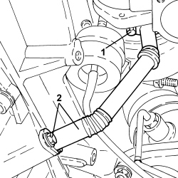
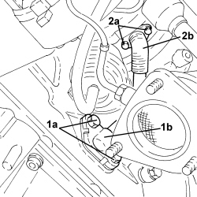
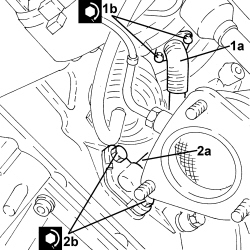

1084B42 ENGINE OIL RETURN PIPE FROM TURBO - R + R
- Path
- Procedures > 10 ENGINE > 1084 ENGINE LUBRICATION > 1084B ENGINE OIL LUBRICATION CIRCUIT > 1084B42 ENGINE OIL RETURN PIPE FROM TURBO - R + R
- Kind
- repair procedure (removal / refitting; the operation number is the code)
- Applies to
- engines: 1.9 JTD 8V, 1.9 JTD 16V, 2.4 JTD 20V; all production periods
- Interactive page
- https://sloeber94.github.io/elrnDB/#/939010657
Applies to: engines: 2.4 JTD 20V; all production periods
 Removing
Removing
 Refitting
RefittingOp. 1016A10 SOUND-PROOFING COVER - R.R
Op. 1048A42 SLEEVE FROM FLOW METER TO TURBO CHARGER AIR INLET PIPE - R + R
Op. 1048A51 TURBOCHARGER RIGID AIR INLET HOSE - R.R.
Op. 7055B54 UNDER ENGINE PROTECTION/GUARD - R.R.
1. Undo the bolts securing the engine oil return pipe, turbocharger side.
2. Undo the bolts securing the engine oil return pipe, engine sump side and remove it.

Applies to: engines: 2.4 JTD 20V; all production periods
Refitting
Removing- Position the turbocharger engine oil return pipe in its housing and secure it using the bolts.
Op. 7055B54 UNDER ENGINE PROTECTION/GUARD - R.R.
Op. 1048A51 TURBOCHARGER RIGID AIR INLET HOSE - R.R.
Op. 1048A42 SLEEVE FROM FLOW METER TO TURBO CHARGER AIR INLET PIPE - R + R
Applies to: engines: 1.9 JTD 8V, 1.9 JTD 16V; all production periods
Removing
Refitting- Position the vehicle on a lift.
Op. 1016A10 SOUND-PROOFING COVER - R.R
Op. 5530B52 BATTERY SUPPORT/DRIP TRAY - R.R
Op. 1048B14 AIR DELIVERY HOSE BETWEEN TURBOCHARGER AND HEAT EXCHANGER - REPLACE
Op. 7055B54 UNDER ENGINE PROTECTION/GUARD - R.R.
Op. 1048A50 TURBOCHARGER AIR INTAKE PIPE - R.R.
Op. 1048A10 AIR FILTER ASSEMBLY - R.R.
Op. 1084A16 OIL DIPSTICK PIPE - R.R
Op. 1088D24 WATER PUMP RIGID COOLANT INLET PIPE - R.R.
Op. 1072C44 EXHAUST MANIFOLD HEAT SHIELD - R+R
Op. 1076B72 INTERMEDIATE EXHAUST PIPE WITH HOSE SECTION - R+R
1. Undo bolts (1a) and disconnect turbocharger oil return pipe (1b), engine block side.
2. Undo bolts (2a) and disconnect turbocharger engine oil return pipe (2b), turbocharger side, and remove it.
- Remove the seals.

Applies to: engines: 1.9 JTD 8V, 1.9 JTD 16V; all production periods
Refitting
Removing1. Place engine oil return pipe from the turbo (1a) back in its housing complete with seals, connect it to the turbocharger and tighten bolts (1b) to the recommended torque.
Component | Fastening | dia | Value (daNm) | Validity |
|---|---|---|---|---|
Engine oil supply pipe from turbocharger | Bolt | M8 | (turbocharger side) 2.2 - 2.7 | 1.9 JTD 16v 1.9 JTD 8v |
2. Connect engine oil return pipe from turbocharger (2a), engine crankcase side, and tighten bolts (2b) to the specified torque.
Component | Fastening | dia | Value (daNm) | Validity |
|---|---|---|---|---|
Engine oil supply pipe from turbocharger | Bolt | M8 | (engine crankcase side) 2.2 - 2.7 | 1.9 JTD 16v 1.9 JTD 8v |

Applies to: engines: 1.9 JTD 8V, 1.9 JTD 16V; all production periods
Op. 1076B72 INTERMEDIATE EXHAUST PIPE WITH HOSE SECTION - R+R
Op. 1072C44 EXHAUST MANIFOLD HEAT SHIELD - R+R
Op. 1088D24 WATER PUMP RIGID COOLANT INLET PIPE - R.R.
Op. 1084A16 OIL DIPSTICK PIPE - R.R
Op. 1048A10 AIR FILTER ASSEMBLY - R.R.
Op. 1048A50 TURBOCHARGER AIR INTAKE PIPE - R.R.
Op. 7055B54 UNDER ENGINE PROTECTION/GUARD - R.R.
Op. 1048B14 AIR DELIVERY HOSE BETWEEN TURBOCHARGER AND HEAT EXCHANGER - REPLACE
Op. 5530B52 BATTERY SUPPORT/DRIP TRAY - R.R
Op. 0010T20 ENGINE COOLANT - CHANGE
Op. 1016A10 SOUND-PROOFING COVER - R.R
- Remove the vehicle from the lift.
Topics linked from this page (14)
- 0010T20 ENGINE COOLANT - CHANGE
- 1016A10 SOUND-PROOFING COVER - R.R
- 1048A10 AIR FILTER ASSEMBLY - R.R.
- 1048A42 SLEEVE FROM FLOW METER TO TURBO CHARGER AIR INLET PIPE - R + R
- 1048A50 TURBOCHARGER AIR INTAKE PIPE - R.R.
- 1048A51 TURBOCHARGER RIGID AIR INLET HOSE - R.R.
- 1048B14 AIR DELIVERY HOSE BETWEEN TURBOCHARGER AND HEAT EXCHANGER - REPLACE
- 1072C44 EXHAUST MANIFOLD HEAT SHIELD - R+R
- 1076B72 INTERMEDIATE EXHAUST PIPE WITH HOSE SECTION - R+R
- 1084A16 OIL DIPSTICK PIPE - R.R
- 1088D24 WATER PUMP RIGID COOLANT INLET PIPE - R.R.
- 5530B10 BATTERY - R+R
- 5530B52 BATTERY SUPPORT/DRIP TRAY - R.R
- 7055B54 UNDER ENGINE PROTECTION/GUARD - R.R.